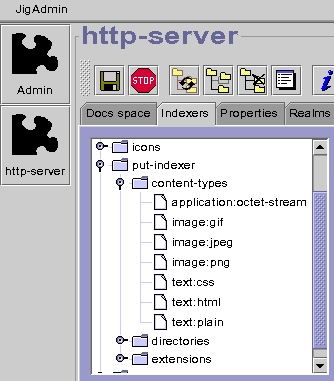
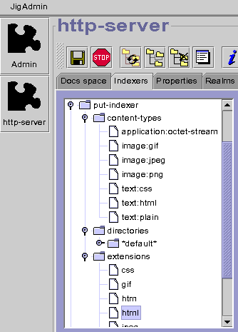

This page describes how to setup an editable space under Jigsaw.
Today most of the authoring tools allows you to use the PUT method of HTTP
to publish a document on a web server.
In the following configuration, the editable URL will be http://your-server-host/publications.
The tutorial will go through the following steps:
-
Configuring a PUT indexer
-
Configuring the editable space
Configuring a PUT indexer
NOTE: Since Jigsaw2.0beta3, there is a
put-indexer already
configured in the distribution.
First, read the indexer documentation. When
you are more familiar with indexers you can go through the following steps:
1) Create the indexer, called it put-indexer for example.
In this case the ContentTypeIndexer
is the most appropriate indexer class to choose.


2) The put-indexer has three nodes: content-types,
directories and extensions.
-
content-types define some relations between mime types and resources.
This is used when the PUT request has a Content-Type Header. If
the Content-Type header is text/html then the resource
called text:html will be the template to use for the new created
resource. The template resource text:html must be a FileResource
associated to an HTTPFrame
with its Putable flag set to on and of course a Content
Type set to text/html.
|

|

|
-
directories is used to index files matching exactly a name, mainly
used to index directories. In this configuration every subdirectories will
be indexed as a DirectoryResource
associated to an HTTPFrame
with its Putable flag set to on.
-
extensions is used to index files with a specific extension. For
example, "html" is a FileResource
with an HTTPFrame
set to give the "text/html" content type to this file (Putable
flag set to on).
|

|

|
NOTE: Don't forget to set all
Putable flag to
on
(in associated HTTPFrame).
3) Save your configuration, your new put-indexer is
ready.
Configuring the editable space
We choose
publications as our editable directory.
1) Create the directory <instdir>/Jigsaw/Jigsaw/WWW/publications.
2) Open a JigAdmin window (see JigAdmin
documentation).
3) Create the publications resource. It should be created
automatically by the default indexer, it should be a DirectoryResource
associated to an HTTPFrame
(but you can use a PassDirectory
with an HTTPFrame).
4) Set the putable flag of the HTTPFrame associated to
publications
to
on. Don't forget to commit your changes.
5) Set the
put-indexer as the current indexer. Commit
your changes.
 6)
6) Save your configuration, now you can PUT some new documents
(and some new directories) in
http://your-server-host/publications/
, enjoy!